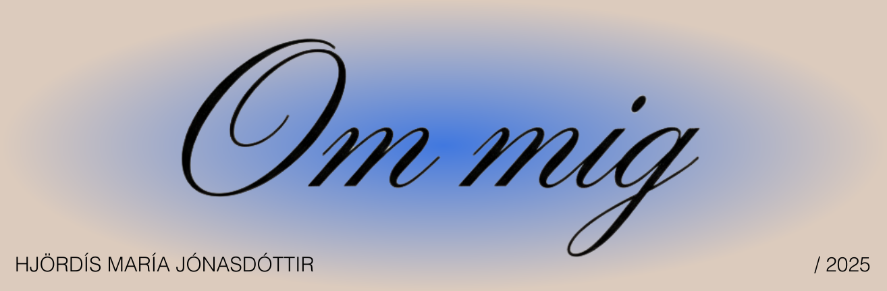
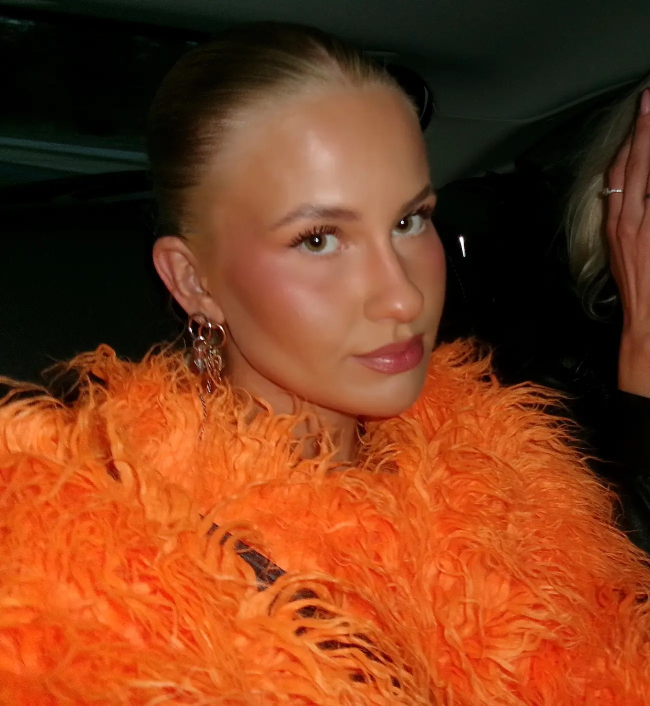
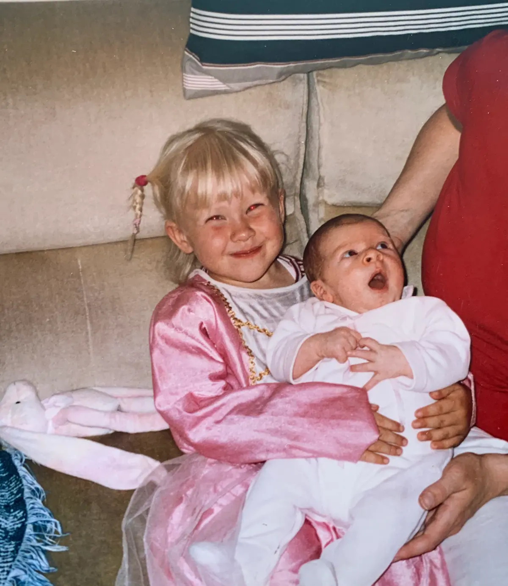

Hvem er jeg?
Mit navn er Hjördís María. Jeg er født den 4. oktober 2000 og er 25 år gammel. Jeg studerer i øjeblikket Multimediedesign på EK, og i august 2025 flyttede jeg fra Reykjavík i Island til København, hvor jeg nu bor sammen med min bedste ven, Dagný.
Jeg er vokset op i Island med mine forældre, to søskende og vores to hunde. Det har været udfordrende at flytte hjemmefra, men det har også hjulpet mig med at vokse som person, blive mere selvstændig og træde ud af min komfortzone.
I min fritid elsker jeg at rejse, spille brætspil, købe tøj (og bruge penge), sole mig, drikke øl, se fodbold, spise pasta og bruge tid sammen med venner og familie.


Hvorfor MMD?
Skole har aldrig været nemt for mig, men efter jeg fik konstateret ADHD, begyndte tingene endelig at give mening. Efter jeg afsluttede skolen, tog jeg to år til at finde ud af, hvad jeg egentlig ville studere — jeg ville ikke bare starte på noget tilfældigt. Én ting var dog altid klart: jeg ville arbejde med design og kreativitet.
Jeg har altid elsket at skabe ting, hvad enten det er at male, sy tøj, lave smykker eller eksperimentere med forskellige materialer. Jeg har længe været nysgerrig på grafisk design, og fordi jeg har mange venner i branchen, tog jeg et kursus i Illustrator, InDesign og Photoshop. Det var her, jeg fandt ud af, at det måske virkelig var noget for mig.
Efter at have hørt rigtig gode ting om Multimediedesign-uddannelsen — og fordi jeg altid har drømt om at bo i København — valgte jeg at søge ind uden de store forventninger. Efter flere måneders ventetid blev jeg optaget, og pludselig ændrede alting sig. Selvom overgangen har været intens (og det kan være udfordrende ikke altid at forstå, hvad lærerne siger, fordi jeg ikke taler dansk endnu), fortryder jeg det ikke et sekund.